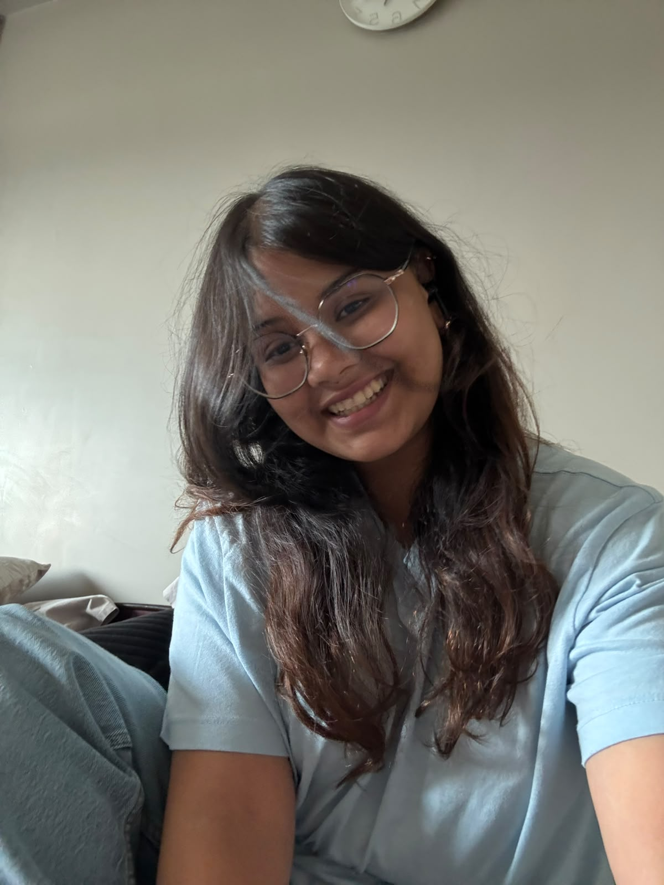

|
Aaliya Alam I'm a Robotics master's student at the University of Michigan, working on robotic perception, state estimation, and learning for autonomous systems. I'm especially interested in the sim-to-real gap and world models. Most recently I was a Perception Intern at Sakar Robotics, building perception for mobile manipulators. Before that I worked on underwater visual odometry and velocity estimation, medical image harmonization, and safety-monitoring vision systems, and led software for an autonomous underwater vehicle team. I studied Computer Science and Engineering (Artificial Intelligence and Robotics) at Vellore Institute of Technology. |
 |

Research and projectsUnderwater state estimation, visual odometry, perception, and reinforcement learning. The highlighted paper is my main research work. |
 |
MARVO: Marine-Adaptive Radiance-aware Visual Odometry Sacchin Sundar, Atman Kikani, Aaliya Alam, Sumukh Shrote, A. Nayeemulla Khan, A. Shahina Preprint, 2025 (submitted to CVPR 2026) preprint Underwater visual odometry that embeds physics-based radiance correction in a transformer matcher to handle wavelength-dependent attenuation and scattering. The corrected visual constraints are fused with IMU pre-integration and barometric depth priors in a GTSAM fixed-lag factor graph, and an RL pose-graph optimizer (SAC with GNN encoding) refines the trajectory, reducing ATE to 1.73 m and drift to 1.2% on real underwater data. |
 |
HADVel: Hydrodynamics-Aware Deep Velocity Estimation for AUVs Aaliya Alam, advised by Dr. Harini S. and Dr. K. Karunamurthy Final-year research project, VIT Chennai, 2025–2026 LSTM-fused velocity estimation from differential-pressure measurements and IMU quaternion feedback. Reaches 98.5–99.0% correlation with ground-truth encoder data (vs. 96.8% for raw differential-pressure channels) and 9.4% relative MAE on multi-speed validation, with consistent sub-50 mm/s error in the 0–0.6 m/s regime used in navigation-critical mission phases. |
 |
Retinal Image Harmonization Aaliya Alam, supervised by Prof. Suchetha Manikandan Centre for Healthcare Advancement, Innovation and Research, VIT Chennai, 2025 Journal manuscript submitted to Elsevier An end-to-end CycleGAN harmonization system with a custom preservation loss that explicitly conserves microaneurysms, haemorrhages, hard exudates, and optic disc structure across cohorts. Achieved 0.93 SSIM, 33 dB PSNR, and L1 loss of 0.0165–0.0186, validated on Indian retinal data from the Madras Diabetes Research Foundation and Vision Research Foundation. |
 |
Real-Time Object Tracking with ORB-FLANN and RANSAC Homography Project code A feature-tracking system with tuned LSH parameters and custom RANSAC homography estimation, running at 32.5 FPS. Reached a 46.15% inlier ratio (the Oxford benchmark averages 40.92%) and 5.6 px average reprojection error, tracking reliably across lighting and viewpoint changes. |
 |
RGB-D Perception and Odometry-Based Mapping Project code A Kinect/ROS pipeline that turns depth images into 3D point clouds for real-time scene understanding, with an online obstacle monitor that estimates the nearest obstacles and issues stop/clear advisories to higher-level control. Also built odometry-based mapping for a differential-drive robot, fusing wheel motion and orientation into live 2D/3D trajectory maps. |
 |
Model-Free Policy Learning for UAV Navigation in Cluttered Environments Project code Tabular Q-learning for 3D drone navigation in cluttered mazes with shaped rewards (distance-to-goal, forward progress, collision penalties). Heatmaps and trajectory statistics over 970 episodes point to reward sparsity as the key challenge. |
Experience |
 |
Perception Intern Sakar Robotics, Pune Feb 2026 – Jul 2026
|
 |
Summer Research Intern Centre for Healthcare Advancement, Innovation and Research, VIT Chennai May 2025 – Aug 2025 certificate
|
 |
President Advances in Autonomous Unmanned Vehicles Club, VIT Chennai Aug 2024 – Aug 2025
|
 |
Data Scientist Intern Fifthgen Tech Solutions, Noida May 2024 – Jul 2024 certificate
|
 |
Programming Lead Dreadnought Robotics (AUV team) Sep 2023 – Feb 2024
|
Miscellanea |
| Education | M.S. in Robotics, University of Michigan, Ann Arbor, 2026–present B.Tech in Computer Science and Engineering (AI and Robotics), Vellore Institute of Technology, Chennai, 2022–2026. CGPA 8.8/10 |
| Honors | 2nd Place (international), TAU Autonomy Centre Competition, Norway, 2024
[performance / certificate] Participant, Smart India Hackathon 2023; IIT Bombay Techfest Meshmerize ’23 |
| Service | Event Coordinator, Robo Trail Competition, TechnoVIT ’23 (VIT Chennai) [certificate] Talk on visual odometry in AUV systems at inter-university robotics engagements [resources] Mentor to 90+ participants, DNT 24-hour RC Car Buildathon, VIT Chennai |
| Skills | C/C++, Python, Java, Arduino, CMake, LaTeX, Git ROS / ROS 2, Gazebo, RViz, CoppeliaSim, AirSim, QGroundControl, MATLAB/Simulink PyTorch, TensorFlow, OpenCV, GTSAM, NumPy, Pandas, Matplotlib, Linux |
Design and source code from Jon Barron's website.